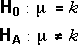
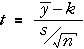
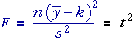
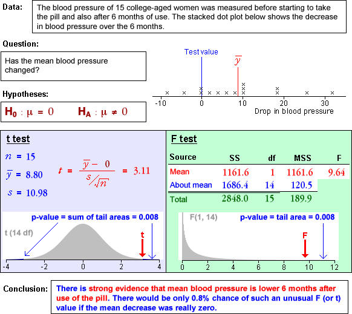

Relationship between F and t statistics
It might initially appear that the analysis of variance and t-tests are different for the hypotheses

Recall that the t-test is based on the test statistic

The F ratio that underlies the analysis of variance test is the square of this,

The p-value for the t-test is the probability of recording a t-value as far from zero, and this equals the probability of getting as large an F-ratio as the one evaluated from the data.
The t-test and F-test therefore result in identical p-values.
Why use the analysis of variance table?
Nothing has been gained from testing the mean of a normal sample with an analysis of variance table and test, so you may wonder why we have bothered to described it here.
The analysis of variance approach can be extended to analyse and test more complex models.
We have only described the analysis of variance approach to testing the mean of a single sample as a simple illustration of this general methodology — you should use a t-test in practice.
Examples
In the examples below, a hypothesis test about the population mean is performed both with a t-test and an F-test. Note in all examples that:
F = t2
The p-values and therefore the conclusions are identical for both tests.
